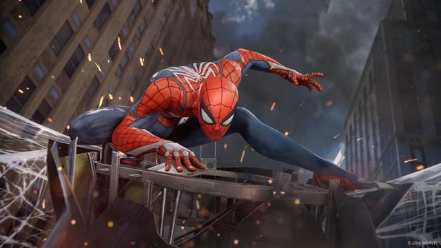

Iron Man

Iron Man (Anthony Edward "Tony" Stark) adalah pahlawan super fiksi yang muncul dalam buku komik Amerika yang diterbitkan oleh Marvel Comics, serta media yang terkait. Karakter diciptakan oleh penulis dan editor Stan Lee, yang dikembangkan oleh penulis skenario Larry Lieber, dan dirancang oleh seniman Don Heck dan Jack Kirby. Dia membuat penampilan pertamanya di Tales of Suspense #39 (cover tertanggal bulan Maret 1963).
Sepanjang sebagian besar sejarah publikasi karakter, Iron Man telah menjadi anggota pendiri tim superhero Avengers dan telah tampil dalam beberapa inkarnasi dari berbagai seri buku komik sendiri. Iron Man telah diadaptasi untuk beberapa acara TV animasi dan film. Karakter ini diperankan oleh Robert Downey Jr. dalam hidup film aksi Iron Man (2008), yang merupakan box office. Downey, yang menerima banyak pujian untuk penampilannya, mengulangi peran dalam cameo di The Incredible Hulk (2008), dua sekuel Iron Man Iron Man 2 (2010) dan Iron Man 3 (2013), The Avengers (2012), Avengers: Age of Ultron (2015), dan Captain America: Civil War (2016), dan akan melakukannya lagi di Spider-Man: Homecoming (2017) serta Avengers: Infinity War (2018) dan sekuelnya Avengers: Endgame (2019) di Marvel Cinematic Universe.
Iron Man berada di peringkat 12 pada IGN "Top 100 Comic Book Heroes" pada tahun 2011,dan yang ketiga dalam daftar "The Top 50 Avengers" pada tahun 2012.
Captain America

Captain America adalah sosok pahlawan super fiktif dari Marvel Comics. Memiliki musuh besar bernama Red Skull dan Baron Zemo, Rogers adalah tentara AS yang tidak memiliki kemampuan sama sekali. Berkat bantuan Dr. Joshef Reinstein dengan serum super soldiernya. Pahlawan yang lahir pada tahun 1920 ini menjadi pahlawan perang Amerika Serikat saat menghadapi sekutu NAZI yang dipimpin oleh Adolf Hitler. Dibuat oleh komikus Joe Simon dan Jack Kirby, karakter pertama kali muncul di Captain America Comics # 1 (cover Maret 1941) dari Timely Comics, pendahulu dari Marvel Comics.
Captain America memakai kostum yang dikenakan bendera bermotif bendera Amerika Serikat, dan dipersenjatai dengan perisai hampir tidak bisa dihancurkan saat ia melempar pada musuh. Karakter ini biasanya digambarkan sebagai alter ego dari Steve Rogers, seorang pemuda lemah yang ditingkatkan ke puncak kesempurnaan manusia oleh serum eksperimental untuk membantu upaya pemerintah Amerika Serikat dalam Perang Dunia II. Menjelang akhir perang, ia terjebak dalam es dan selamat dalam animasi ditangguhkan sampai dia dihidupkan kembali pada hari ini. Meskipun Captain America sering berjuang untuk mempertahankan cita-citanya sebagai seorang pria yang keluar dari waktunya dengan realitas modern, ia tetap menjadi tokoh yang sangat dihormati di masyarakat yang meliputi menjadi pemimpin lama dari Avengers.
Captain America adalah yang pertama karakter Marvel Comics telah muncul di media luar komik dengan rilis dari seri film tahun 1944, Captain America. Sejak itu, karakter telah ditampilkan dalam film lain dan serial televisi, baru-baru ini di Marvel Cinematic Universe (MCU) diperankan oleh Chris Evans di Captain America: The First Avenger, The Avengers, Captain America: The Winter Soldier, Avengers: Age of Ultron, Captain America: Civil War, dan film Avengers: Infinity War (2018) dan sekuelnya untitled sequel (2019).
Black Widow

Black Widow adalah film pahlawan super Amerika Serikat tahun 2021 yang didasarkan dari karakter Marvel Comics bernama sama. Film ini diproduksi Marvel Studios dan disalurkan Walt Disney Studios Motion Pictures. Film ini adalah film ke-24 Marvel Cinematic Universe (MCU). Film ini disutradarai Cate Shortland, ditulis Jac Schaeffer dan Ned Benson, serta dibintangi Scarlett Johansson, David Harbour, Florence Pugh, O-T Fagbenle, dan Rachel Weisz. Film ini dijadwalkan akan ditayangkan di Amerika Serikat pada 7 Mei 2021 dan Indonesia dua hari sebelumnya.
Spiderman

Spider-Man (bahasa Indonesia: Manusia Laba-laba), adalah pahlawan super fiktif dari Marvel Comics yang diciptakan oleh penulis Stan Lee dan artis Steve Ditko. Ia pertama muncul dalam Amazing Fantasy #15 (Agustus 1962). Ia telah menjadi salah satu pahlawan super yang paling terkenal di dunia.
Ketika Spider-Man pertama kali muncul di awal 1960-an, remaja di buku komik superhero biasanya terdegradasi ke peran sidekick ke protagonis. Serial Spider-Man memecahkan masalah dengan menampilkan Peter Parker, siswa SMA di balik identitas rahasia Spider-Man dan dengan "obsesi diri dengan penolakan, ketidakmampuan, dan kesepian" sehingga pembaca muda bisa berhubungan. Sementara Spider-Man memiliki semua bakat sidekick, tidak seperti pahlawan remaja sebelumnya seperti Bucky dan Robin, Spider-Man tidak memiliki mentor superhero seperti Captain America dan Batman; dengan demikian dia harus belajar untuk dirinya sendiri bahwa "dengan kekuatan besar di sana juga harus ada tanggung jawab yang besar"– sebuah garis yang termasuk dalam kotak teks di panel akhir cerita Spider-Man yang pertama namun kemudian secara surut dikaitkan dengan wali mereka, mendiang Paman Ben.